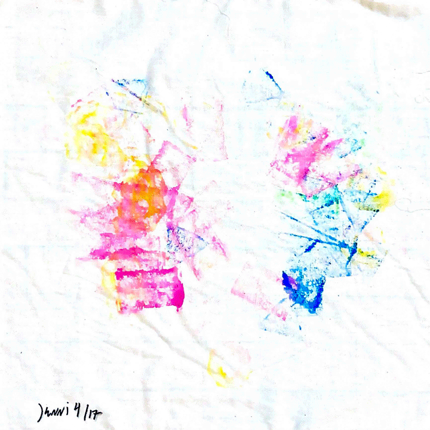
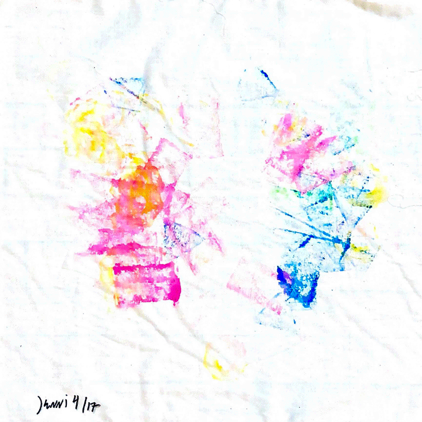
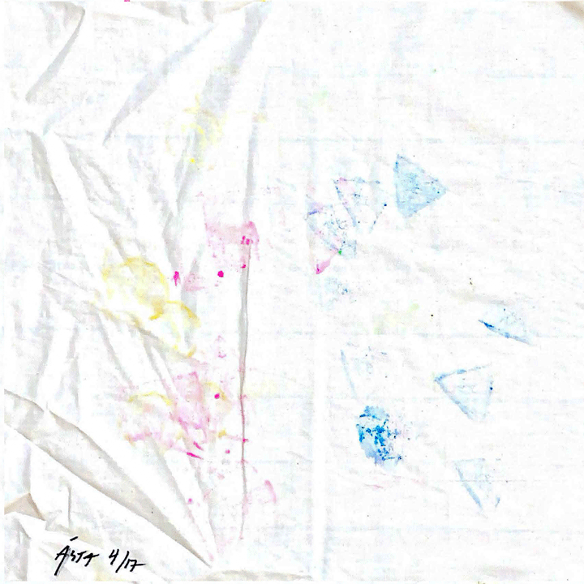
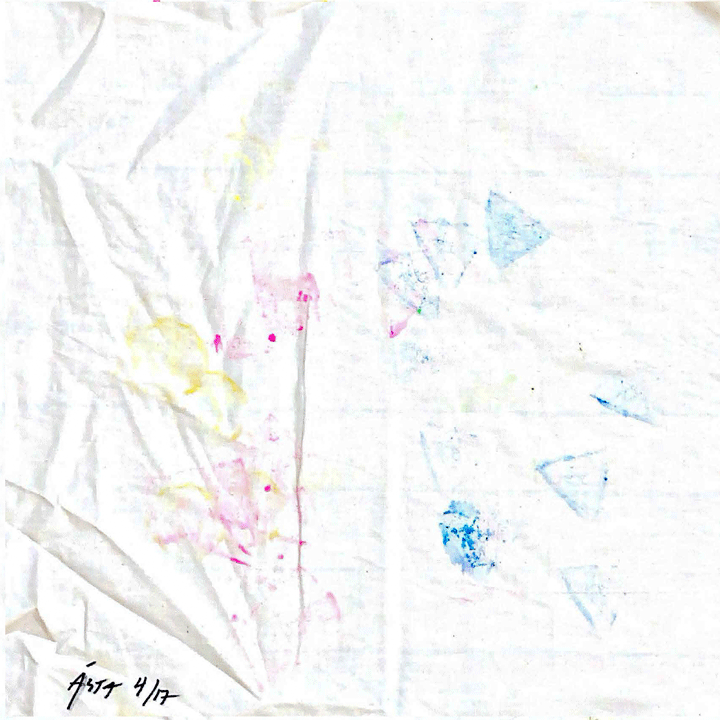
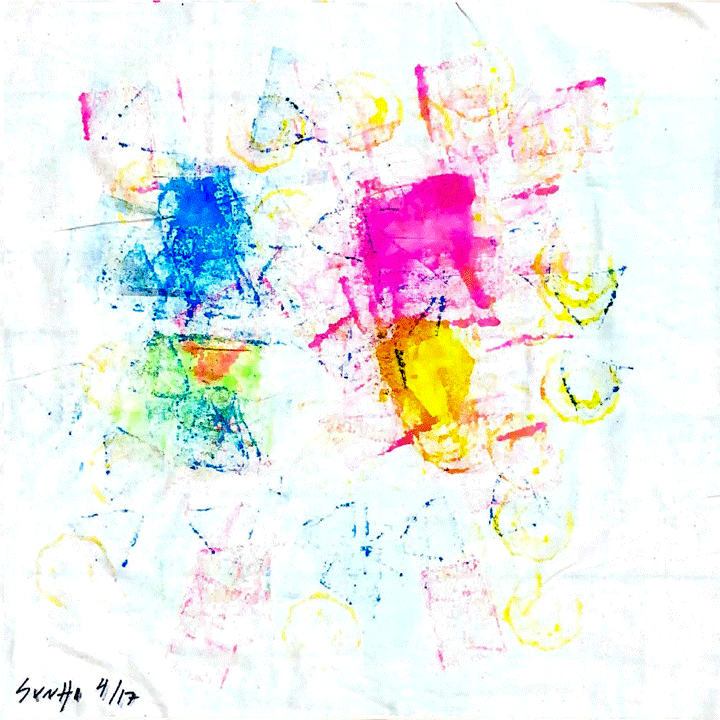
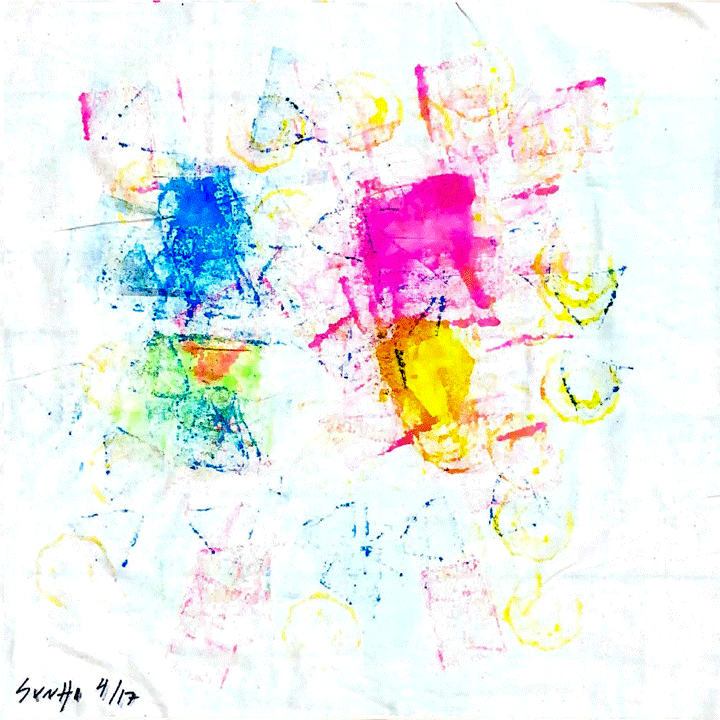
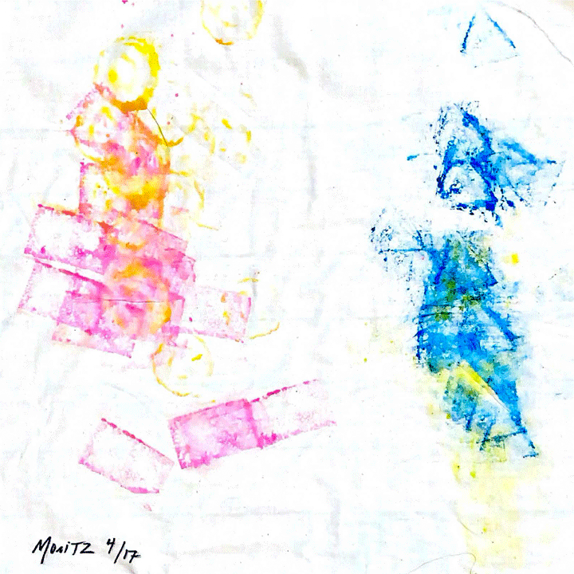
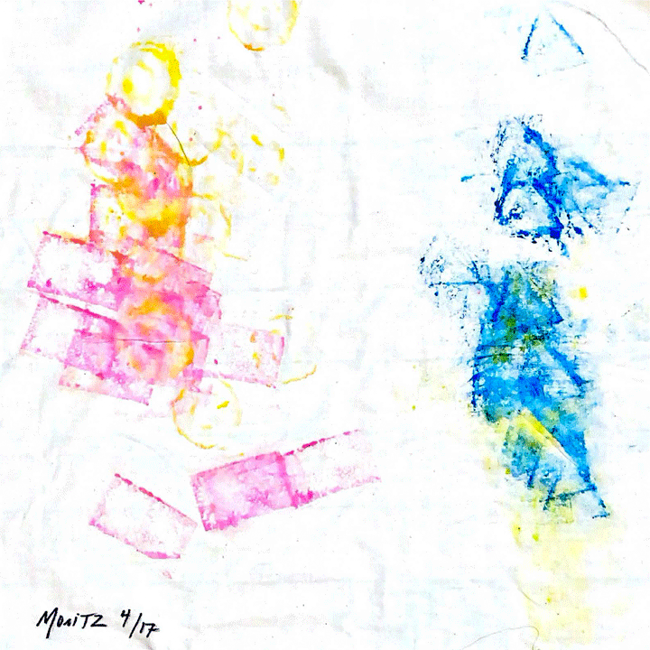

DANCE PARTY DANCE PARTY DANCE PARTY DANCE PARTY DANCE PARTY DANCE PARTY DANCE PARTY
DANCE PARTY DANCE PARTY DANCE PARTY DANCE PARTY DANCE PARTY DANCE PARTY DANCE PARTY
1a —
shoes were formed with the combination of 3d printed heels, plexiglass soles & velcro closures. the blocks were engineered to function as stamps — each heel having a custom extruded shape that references the icons used on the game board. the stamps were created by inserting sponges into the shapes that were extruded from the heels and then a mix of acrylic ink and fabric pigment were added to the sponges to create impressions. there were two prototypes created for the functions of this initial run.
2a —
nine participants participated over the course of two days. the first run utilized paper as the "given surface"in which they danced on. the paper proved to be problematic, leading to tears during the users turns. the size and start postions also required reworking as the particpants did not need much space to make marks and the inked bottoms of the shoes left blobby messes on the compostions before the dancer began to move. for the second run muslin fabic was ulitized, along with a smaller dancing surface.
 

 

 

 
